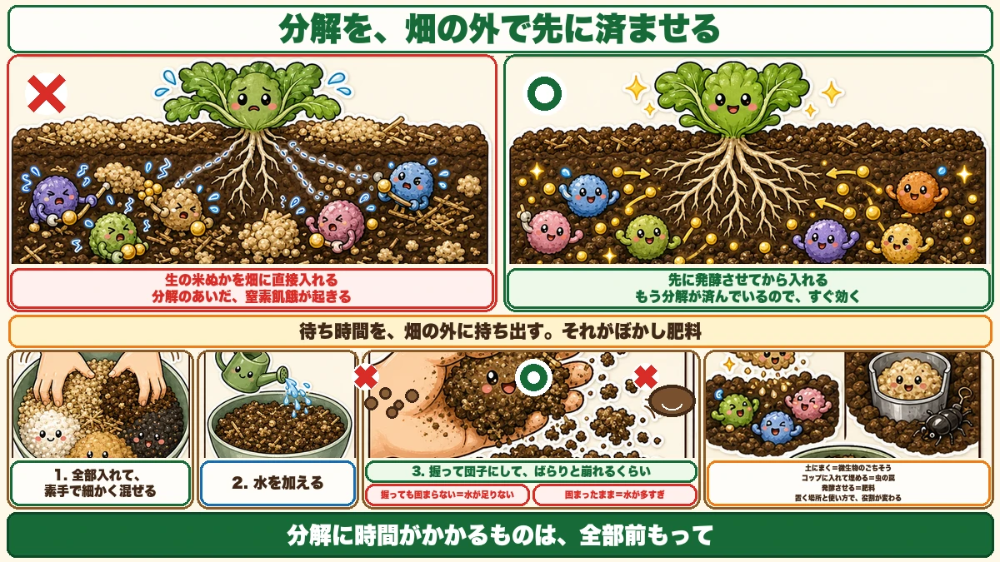
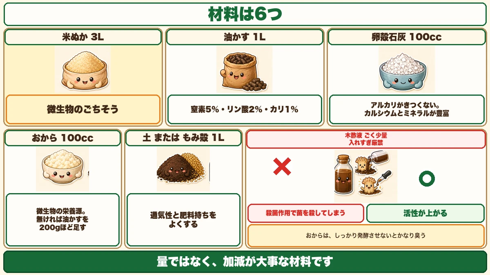
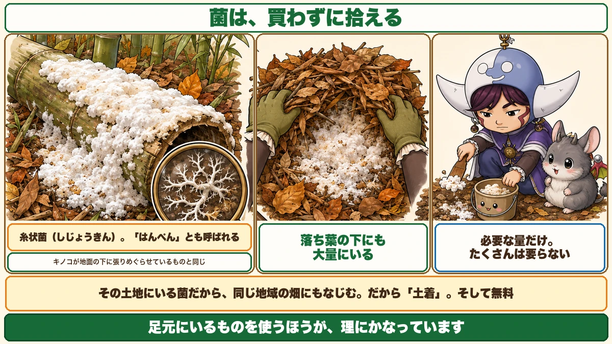

You can pick up the microbes for free 🍂 Making bokashi fertiliser

🍂 "I assumed fertiliser was something you buy."
🍂 "What does 'bokashi' actually mean?"
🍂 "I spread rice bran and things grew worse."
Hello, I'm Eiko. Eight years of growing vegetables organically and without pesticides, and a teaching licence in science.
Autumn is when the leaf litter arrives, and when you set fertiliser going for the winter.
The headline:
The main ingredient of bokashi can be picked up in a bamboo grove.
You don't have to buy the microbes.
Why ferment it at all

What this diagram says （図解の文字）
- Do the decomposition outside the bed, first
- ✗ "raw rice bran straight into the bed" — "nitrogen drawdown while it decomposes"
- ○ "ferment it first, then add it" — "decomposition is already done, so it works immediately"
Here's the central idea. Rice bran consumes nitrogen while it decomposes. That's nitrogen drawdown — during decomposition, the nitrogen in the soil is taken by the microbes.
Which is why raw material goes in during winter, so decomposition finishes before spring.
Bokashi is doing that decomposition outside the bed instead.
- Straight into the soil → nitrogen drawdown while it breaks down
- Fermented first → decomposition already done, so it works immediately
You move the waiting outside the garden. That's what bokashi is for.
The name
One explanation is that it blurs, or softens, the effect of the fertiliser.
Raw materials put in as they are can act too strongly, or give off gas. Fermenting takes the edge off — it converts something fast-acting into something slow-acting.
The ingredients

What this diagram says （図解の文字）
- Six ingredients
- Rice bran 3 L — "a feast for the microbes"
- Rapeseed meal 1 L — "N 5 % / P 2 % / K 1 %"
- Eggshell lime 100 ml — "not harshly alkaline; rich in calcium and minerals"
- Okara (soy pulp) 100 ml — "food for the microbes"
- Rice bran — 3 L. The main material, and a feast for the microbes
- Rapeseed meal — 1 L. Roughly 5 % nitrogen, 2 % phosphorus, 1 % potassium; it supplies the nitrogen
- Eggshell lime — 100 ml. The good part: it isn't harshly alkaline, so overdoing it is hard, and it's rich in calcium and minerals. Because it's mild, it can even be used where a harsher lime would cause potato scab
- Okara (soy pulp) — 100 ml. Food for the microbes. Without it, add another 200 g of rapeseed meal. Be warned: okara smells strongly if the fermentation isn't thorough
- Soil or rice hulls — 1 L. For aeration and nutrient retention
- Wood vinegar — a very small amount. ★Never much. Wood vinegar is antiseptic — too much kills the very microbes you want. A tiny quantity, though, stimulates microbial activity. It's a matter of restraint, not volume
The star is the local fungus

What this diagram says （図解の文字）
- You can collect the microbes instead of buying them
- "Filamentous fungi — also called 'hanpen' (fish cake)"
- "The same thing a mushroom spreads underground"
- "There are plenty under the leaf litter too" — "collect only what you need"
Fermenting needs fermenting organisms. You can buy them — or pick them up.
Look in a bamboo grove
Bamboo cut last year and left lying, as it starts to rot, will have white material spread thickly over it. That's the local fungus.
Filamentous fungi
White, spreading in threads — filamentous fungi. In Japanese, some people call it hanpen after the white fish cake it resembles: white, soft, slightly puffy.
Think of it as a relative of mushrooms — it's the same stuff a mushroom spreads through the ground beneath it.
Or under leaf litter
No bamboo grove? There are plenty under fallen leaves. A park, a wood, the back of the house — push aside somewhere last year's leaves have piled up. If you see white, that's it.
Scrape it off and take it home
Just scrape the fungus off the bamboo. Collect only what you need — it isn't much.
Why "local" matters
Because it's a fungus from your own area. Having lived in that environment, it settles into a garden in the same area.
Bought cultures aren't bad. But using what's at your feet makes sense — and it's free.
Making it
- Put all the ingredients in
- Mix thoroughly by hand
- Mix finely and completely
This is the critical step. Poor mixing gives uneven fermentation, and unless you're making a lot, hands are the most reliable tool.
Once mixed, add the wood vinegar — a very small amount. Again: don't overdo it.
Then the water
An idea I came across: soak the spent block from a mushroom-growing kit in water for a day and use that water. Presumably full of fungi — I can't say whether it helps, but it seems worth trying. Plain water is fine.
The moisture test: squeeze, and it crumbles
The most important variable is the water.
Squeeze a handful into a ball; it should crumble apart.
- Won't hold together at all → too dry
- Stays in a solid ball → too wet
It forms a ball, but falls apart when you press it. That's right — the same test used in compost-making.
Rice bran, three times over
Rice bran has now appeared in three different roles:
- Winter digging — a feast for soil microbes, scattered over the turned clods
- Armyworms — they love it. A paper cup of it buried at the base of a plant is a trap
- Today — the main material of bokashi, feeding the microbes so fermentation proceeds
What I find interesting is that it's equally a feast for microbes and for insects — and where you put it decides whether it becomes an ally, a trap or a fertiliser.
- Scattered on soil → microbes work and the soil improves
- Buried in a cup → a trap that gathers pests
- Fermented → fertiliser
How you use a thing matters more than the thing itself. Home gardening is full of that.
To sum up
- ✅ Bokashi does the decomposition outside the bed, so the nitrogen drawdown happens there
- ✅ Added raw, it draws down nitrogen; fermented, it works immediately
- ✅ Fermenting softens a fast-acting material into a slow one
- ✅ Rice bran 3 L, rapeseed meal 1 L, eggshell lime 100 ml, okara 100 ml, soil or hulls 1 L
- ✅ Wood vinegar: a trace only. Too much kills the microbes
- ✅ The fungus is free — on rotting bamboo, or under leaf litter
- ✅ White, thread-like: filamentous fungi, the same as mushroom mycelium
- ✅ A local fungus settles into a local garden
- ✅ Mix thoroughly by hand
- ✅ Squeeze into a ball; it should crumble
- ✅ Rice bran is a feast for microbes and insects alike — the use decides the role
You don't have to do all of it. Next time you're near a wood, push some old leaves aside and look for white. That's the main ingredient, and it costs nothing 🍂
Thank you for reading!